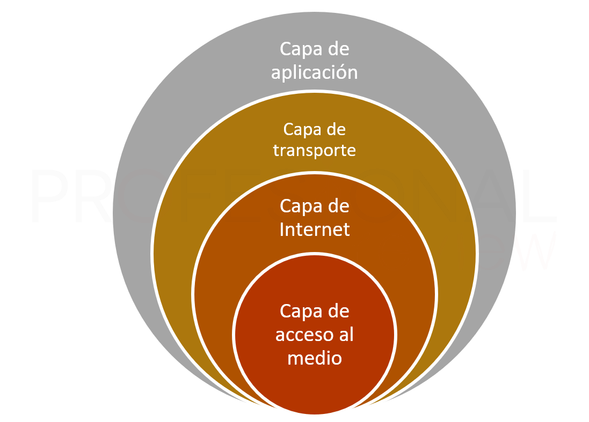

El modelo TCP/IP (Transmission Control Protocol/Internet Protocol) es una arquitectura de red diseñada para permitir la comunicación entre dispositivos a través de redes interconectadas, como internet. Consta de cuatro capas: enlace, internet, transporte y aplicación, cada una con funciones específicas para gestionar el envío y la recepción de datos.

A continuación, se presenta una tabla detallada de cada capa que conforma el modelo TCP/IP, así como un ejemplo de cada una.
| Capas del Modelo TCP/IP | Características | Ejemplo | |
| Capa de Aplicación | Equivale a capas 5-7 del OSI y se encarga de la interacción con las aplicaciones del usuario. | Cuando se abre el navegador y se visita un sitio web, como www.google.com, para solicitar la página web desde el servidor de Google. | |
| Capa de Transporte | Igual que en OSI asegura la correcta transmisión de datos. | Cuando se envía un mensaje de texto en WhatsApp, la capa de transporte usa el protocolo TCP para dividir el mensaje en fragmentos (paquetes) y asegurar que todos los paquetes se entreguen completos y en el orden correcto al destinatario. | |
| Capa de Internet | Equivale a la capa de Red en OSI) y se encarga del direccionamiento y enrutamiento. | Cuando se usa una aplicación de mapas y se comparte la ubicación con otra persona, la capa de Internet utiliza el protocolo IP para enviar la dirección de su dispositivo (IP) junto con la información de ubicación. |  |
| Capa de Acceso a la Red | Equivale a capas 1 y 2 en OSI, y gestiona la transmisión física de los datos. | Cuando se conecta a la red Wi-Fi de una escuela, el dispositivo utiliza la capa de acceso a la red para "hablar" directamente con el router Wi-Fi. | |